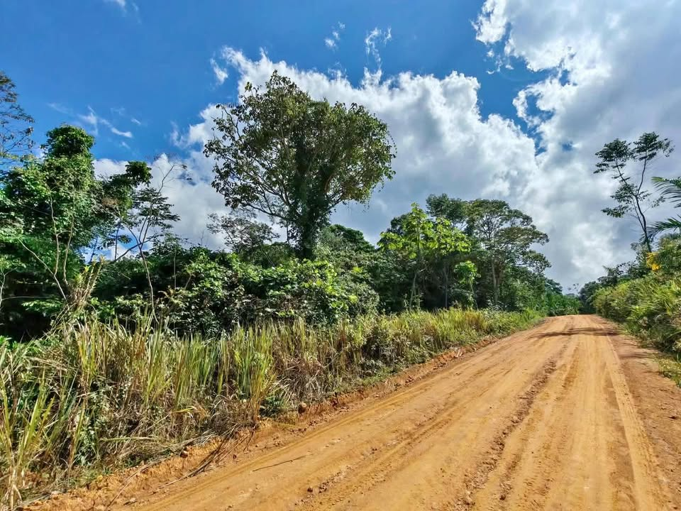
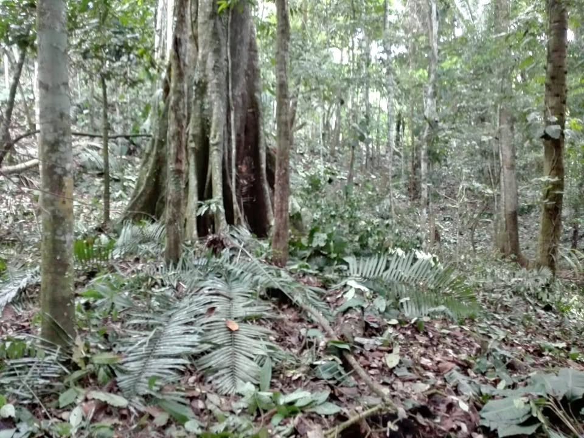
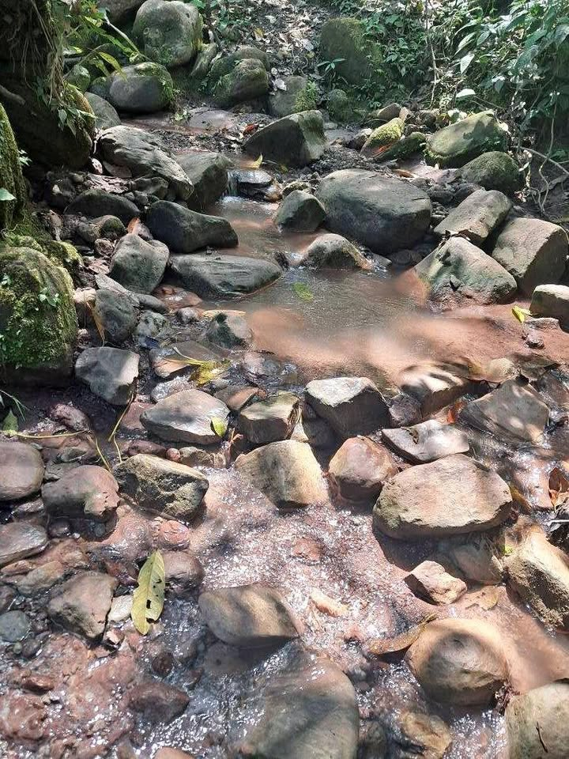
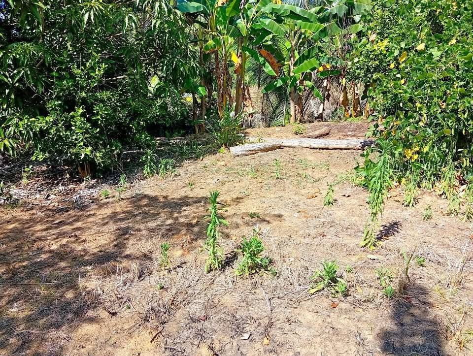
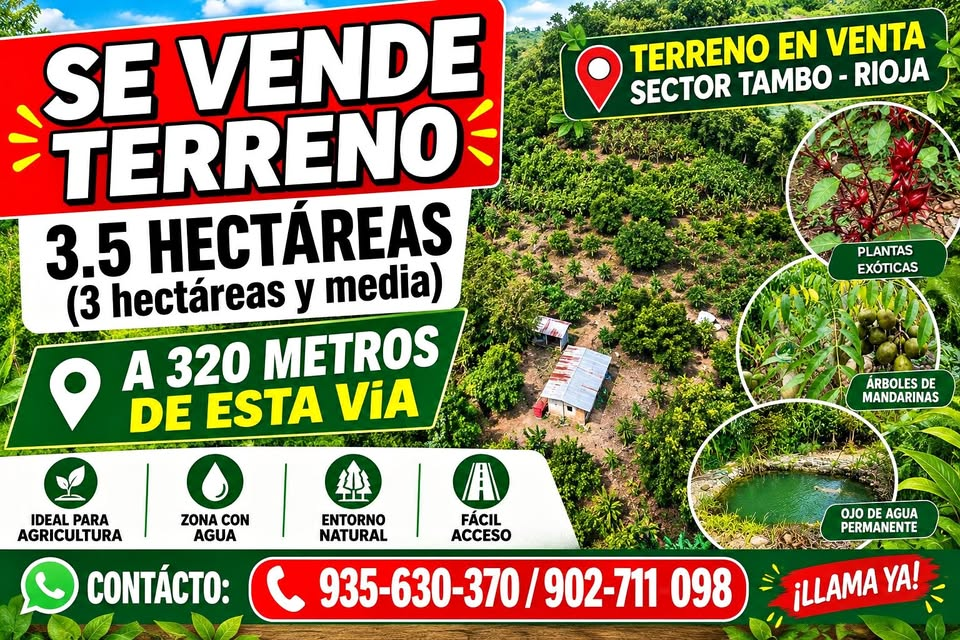
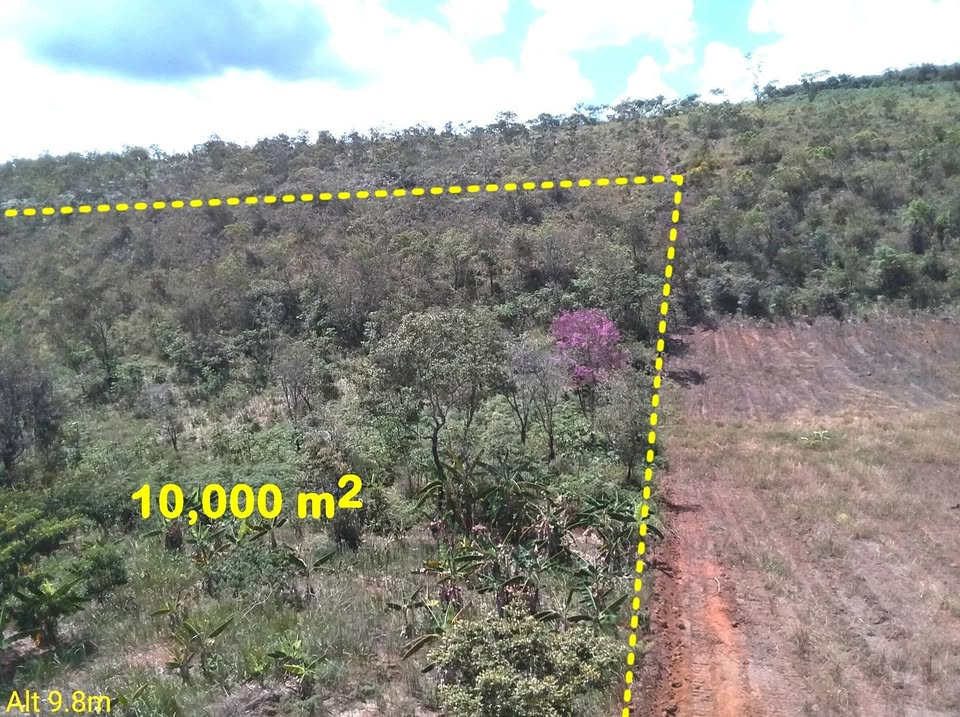
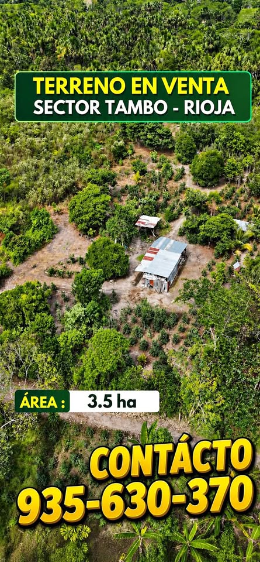
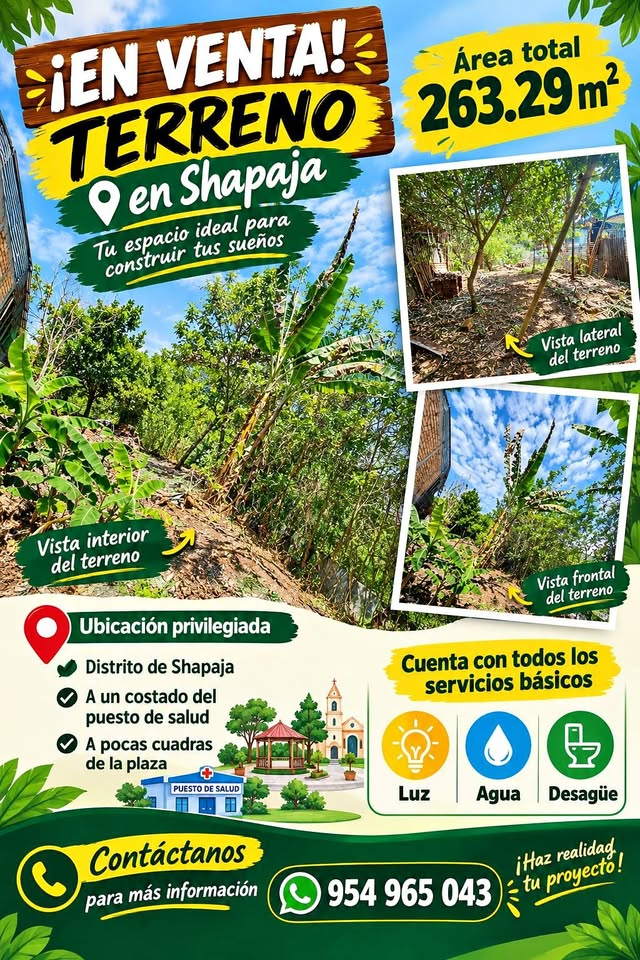
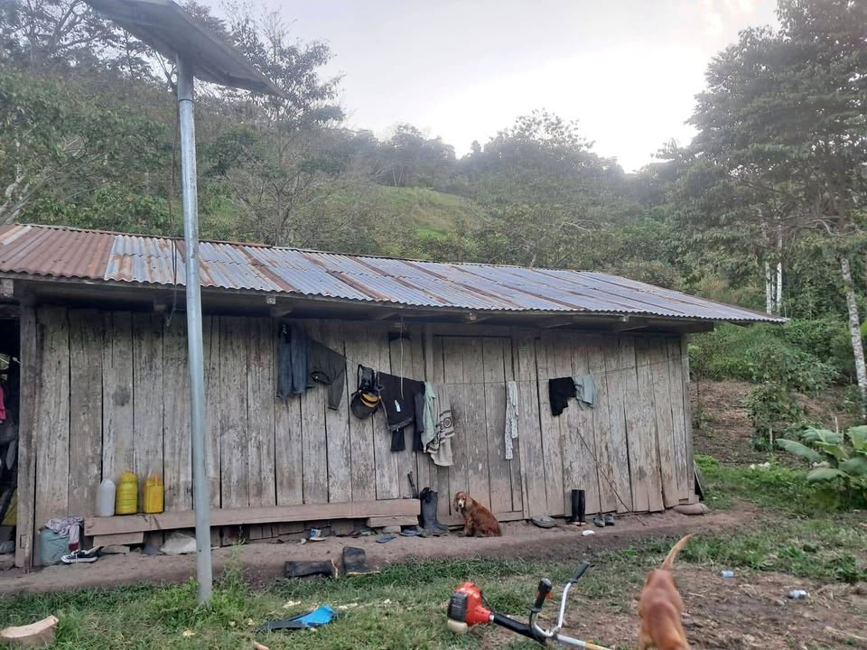
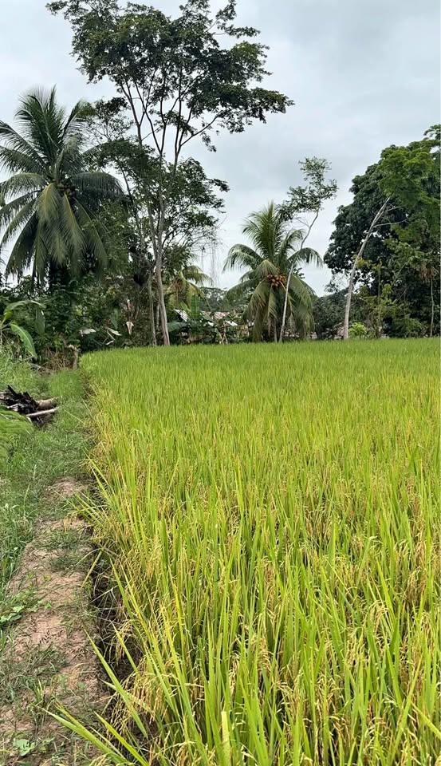

Chacras en venta en San Martín
Hay 53 anuncios de chacras en la región San Martín. El precio mediano publicado es S/ 100,000, con anuncios desde S/ 1,800 hasta S/ 3,000,000. Los tamaños van de 180 m² a 90 ha (mediana 3,5 ha). 8 mencionan título o partida en su descripción (según el vendedor; no verificado).
Ver en el mapa y filtrar Cómo comprar seguro
Anuncios
 2 hectáreas por Morroyacu Calzada.
2 hectáreas por Morroyacu Calzada.
S/ 70,000 · 2 ha · Calzada TERRENO 2.7 HECTÁREAS PARA ARROZ, MAÍZ,CON AGUA, Moyobamba, 35 Mil por hectárea [dato ocul
TERRENO 2.7 HECTÁREAS PARA ARROZ, MAÍZ,CON AGUA, Moyobamba, 35 Mil por hectárea [dato ocul
S/ 35,000 · 2,7 ha · Moyobamba Chacra de cacao en Jerillo VENTA.
Chacra de cacao en Jerillo VENTA.
S/ 30,000 · Jerillo Terreno filo de Carretera en Calzada
Terreno filo de Carretera en Calzada
S/ 140,000 · 4 ha · Calzada VENTA 3.3 HECTAREAS CAMPO ALEGRE, MOYOBAMBA
VENTA 3.3 HECTAREAS CAMPO ALEGRE, MOYOBAMBA
S/ 100,000 · 3,3 ha · Campo Alegre (Moyobamba)
TERRENO EN VENTA EN SELVA DE SAN MARTÍN - LAMAS
S/ 170,000 · 2 ha · Lamas 🌿 REMATO TERRENO EN VENTA - SECTOR TAMBO, RIOJA ✅️
🌿 REMATO TERRENO EN VENTA - SECTOR TAMBO, RIOJA ✅️
S/ 115,000 · 3,5 ha · Tambo (Rioja)
"¡Gran oportunidad! Se vende terreno de montaña alta de 15 hectáreas
S/ 49,500 · 15 ha · Chazuta Terreno en venta
Terreno en venta
S/ 45,000 · 6 ha · Moyobamba
SE VENDE TERRENO DE 10 HECTARIAS
S/ 90,000 · 10 ha · Shucshuyacu Se vende una hectárea de terreno
Se vende una hectárea de terreno
S/ 150,000 · 1 ha · Tarapoto 🚨 TERRENO 3.5 HECTÁREAS EN RIOJA – S/130,000 NEGOCIABLE 🚨
🚨 TERRENO 3.5 HECTÁREAS EN RIOJA – S/130,000 NEGOCIABLE 🚨
S/ 130,000 · 3,5 ha · Rioja
De ocasión en venta 01 hectárea
S/ 250,000 · 1 ha · Cumbaza TERRENO EN VENTA
TERRENO EN VENTA
S/ 3,000,000 · Zapatero
🌿 TERRENO EN VENTA – SECTOR TAMBO, RIOJA 📍 Ubicación: Sector Tambo – Rioja, San Martín.
S/ 100,000 · 3,5 ha · Tambo (Rioja) Terreno en venta
Terreno en venta
S/ 1,800 · Tarapoto
Terreno en Rumisapa - Departamento de San Martín
S/ 155,000 · 1 ha · Morales
🌿 TERRENO EN VENTA – SECTOR TAMBO, RIOJA 📍 Ubicación: Sector Tambo – Rioja, San Martín.
S/ 130,000 · 3,5 ha · Tambo (Rioja) Terreno con Ojo de Agua + Luz | Tarapoto | San Antonio
Terreno con Ojo de Agua + Luz | Tarapoto | San Antonio
S/ 549,500 · 3,89 ha · San Antonio de Cumbaza Vendo 7 hectareas de terreno 4 con cacao sembrado y 3 de monte terreno lado de la carreter
Vendo 7 hectareas de terreno 4 con cacao sembrado y 3 de monte terreno lado de la carreter
S/ 65,000 · 7 ha · La Banda de Shilcayo Se vende terreno de 3000m²
Se vende terreno de 3000m²
S/ 40,000 · 3,000 m² · Aucaloma Terreno 784 m² · Excelente Valor · Tarapoto
Terreno 784 m² · Excelente Valor · Tarapoto
S/ 35,000 · 784 m² · Pucayacu Venta de terreno
Venta de terreno
S/ 120,000 · Morales
TERRENO DE 263 M² EN EL DISTRITO DE SHAPAJA 🌴🤩
S/ 30,000 · 263 m² · Shapaja Terreno de 82 hectareas en San Martin
Terreno de 82 hectareas en San Martin
S/ 1,230,000 · 82 ha · Nuevo Arica (San José de Sisa) Venta de terreno chacra por entrada Shatoyacu Habilitado para criar vacas, chanchos, galli
Venta de terreno chacra por entrada Shatoyacu Habilitado para criar vacas, chanchos, galli
S/ 120,000 · 1 ha · Juan Guerra Vendo terreno de 12.38 Ha
Vendo terreno de 12.38 Ha
S/ 170,000 · 12,38 ha · Pucacaca Se vende 30 hectáreas de terreno en Juanjui precio negociable.
Se vende 30 hectáreas de terreno en Juanjui precio negociable.
S/ 180,000 · 30 ha · Moyobamba VENDO 18 HA DE TERRENO
VENDO 18 HA DE TERRENO
~S/ 60,000 (según el anuncio) · 18 ha · Tingo de Ponasa 🌿 TERRENO DE 3.5 HECTÁREAS EN VENTA - SECTOR TAMBO, RIOJA 🌿
🌿 TERRENO DE 3.5 HECTÁREAS EN VENTA - SECTOR TAMBO, RIOJA 🌿
S/ 135,000 · 3,5 ha · Tambo (Rioja)- 🌿 TERRENO EN VENTA – SECTOR TAMBO, RIOJA
S/ 135,000 · 3,5 ha · Tambo (Rioja)  ¡GRAN OPORTUNIDAD DE INVERSIÓN! 9,643 m2 - frente a Fernando Belaunde Terry Churuzapa
¡GRAN OPORTUNIDAD DE INVERSIÓN! 9,643 m2 - frente a Fernando Belaunde Terry Churuzapa
~S/ 320,000 (según el anuncio) · 6,436 ha · Coordenadas del anuncio Se venden 18 has. de terreno agrícola
Se venden 18 has. de terreno agrícola
S/ 850,000 · 18 ha · Lamas
SE VENDE TERRENO DE 10 HECTÁREAS
S/ 90,000 · 10 ha · Shucshuyacu
SE VENDE 9HECTARES AGRICOLAS A 15 MIN. DE TARAPOTO, 5HA MECANIZADAS Y 4 HECTAREA PARA TRAB
S/ 1,400,000 · 5 ha · Cumbaza- Sin fotoSe vende 9 hectáreas de Arroz
S/ 50,000 · 9 ha · Tarapoto - Sin foto45 HECTAREAS AGRÍCOLAS EN VENTA - JUANJUI MAS ALLA NOMÁS...
S/ 50,000 · 45 ha · Tarapoto - Sin foto5 has de café en venta.
S/ 135,000 · 5 ha · Moyobamba - Sin fotoVenta de terreno agrícola 7.5 HA
S/ 380,000 · 7,5 ha · Nueva Cajamarca - Sin foto5 hectáreas de café
S/ 144,000 · 5 ha · Moyobamba - Sin fotoOcasión de venta de terreno agrícola, vento mi terreno de 58 hectárea
S/ 232,000 · 58 ha · Barranquita - Sin fotoSe vende una hectárea de cacao en lahuarpia
S/ 40,000 · 1 ha · Moyobamba - Sin fotoSe vende una hectárea de cafe en segundo año de producción. Precio negociable
S/ 30,000 · 1 ha · Chazuta - Sin fotoEn venta 3 hectáreas de cacao productivo
S/ 60,000 · 3 ha · Campanilla - Sin fotoSE REMATA DE OCASION TERRENO CON CACAO EN CRECIMIENTOTIENE QUEBRADA Y AL LADO LA CARRETERA
S/ 25,000 · 609 m² · Juanjuí - Sin fotoTerreno en venta con 2 hectáreas de cacao en saposoa paltaico 35 minutos asta el terreno d
S/ 30,000 · 2 ha · Saposoa - Sin foto90 HA BAJO BIAVO SAN MARTÍN | 48 HA PASTO VRISANTA INSTALADO + 39 HA MONTE VIRGEN | 80% PL
S/ 700,000 · 90 ha · Tarapoto - Sin foto26 hectáreas para ganadería.
S/ 470,000 · 26 ha · Moyobamba - Sin foto4 hectáreas listas para sembríos de: Maíz, fréjol, mani, etc, futuro soñembrío de arroz, d
S/ 100,000 · 4 ha · Moyobamba - Sin fotoVendo terreno de 2.4 hectáreas, a solo 10 min de L
S/ 20,000 · 2,4 ha · La Banda de Shilcayo - Sin fotoOCASIÓN SE VENDE TERRENO DE CAFÉ EN TOCACHE REGIÓN SAN MARTIN
S/ 70,000 · 37 ha · Tocache - Sin fotoventa de terreno de cacao
S/ 40,000 · Piscoyacu - Sin fotoTerreno en venta
S/ 11,111 / mes · Cumbaza
Búsquedas relacionadas
Preguntas frecuentes
¿Cómo verifico en SUNARP un chacra en San Martín?
Pide al vendedor el número de partida registral y consúltalo gratis en Conoce Aquí de SUNARP. Luego solicita la copia literal o el certificado registral para ver quién es el dueño y si hay cargas o gravámenes. Más pasos en nuestra guía Compra segura.
¿Los datos de los anuncios están verificados?
No. Precio, tamaño, ubicación y situación legal los escribe cada vendedor. CompraTerrenos.pe no los verifica: confirma todo antes de pagar.
¿Qué diferencia hay entre posesión y propiedad?
Una constancia o certificado de posesión no es un título de propiedad inscrito. Para ser propietario frente a terceros, el título debe estar inscrito en Registros Públicos. Ver Compra segura.
¿Puedo comprar desde el extranjero?
Sí, en general mediante un poder por escritura pública otorgado en el consulado. Revisa Comprar desde el extranjero (información general, no es asesoría legal).
Datos de anuncios públicos actualizados el 9 de octubre de 2026. La información la publica cada vendedor; CompraTerrenos.pe no la verifica.